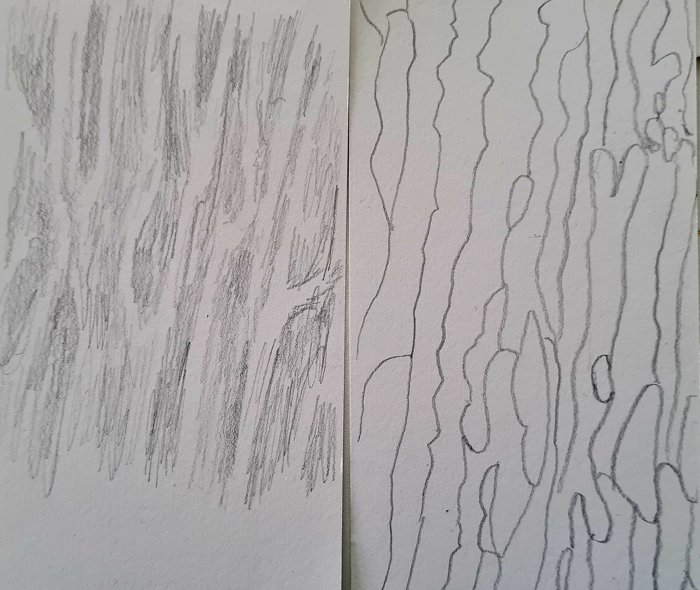

Nature of Code

Auf unserer Exkursion auf Amrum war unsere Aufgabe die Muster der Natur zu beobachten, inspiriert von dem Buch "The Nature of Code". Ich habe Interesse gefunden an dem Muster im Sand dass durch die aufkommenden Wellen entsteht.

Hier sind zwei Skizzen die ich gemacht habe, um ein Gefühl dafür zu kriegen, wie das Muster funktioniert.
Das Programm zeichnet eine animierte, wellenförmige Linie, die langsam von oben nach unten über die Leinwand läuft. Sobald die Linie den unteren Rand erreicht, springt sie ein Stück nach links und bewegt sich dann von unten wieder nach oben – so entsteht ein hin- und herlaufender Rhythmus. Während sie sich bewegt, berechnet der Code an jeder Stelle eine seitliche Verschiebung, damit die Linie organisch wirkt – also wie eine natürliche Welle, zum Beispiel wie Maserungen in Holz oder Strukturen im Sand. Dafür werden Sinusfunktionen und sogenannte Perlin-Noise-Werte verwendet, die für sanfte Zufallsbewegungen sorgen. Außerdem achtet der Code darauf, dass sich die Linien zwar berühren, aber nicht exakt übereinander liegen – so bleibt das Muster klar und interessant. Mit jeder neuen Linie verändert sich das Wellenmuster leicht, wodurch nach und nach ein lebendiges, organisch wirkendes Bild entsteht.